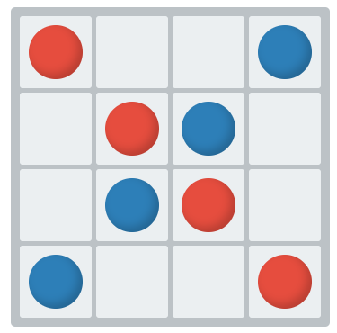

Bienvenido, querido lector, a un paseo por nuevas ideas y un sinfín de posibilidades digitales.
Novedades
Dao Game
¿Buscan un desafío rápido y elegante para su próxima reunión? Anímense a probar Dao, un juego de pura estrategia donde cada movimiento cuenta y la astucia los mantendrá al borde del asiento. ¡Reúnan a sus amigos y demuestren quién es el verdadero maestro del tablero!
Ir al juego Dao